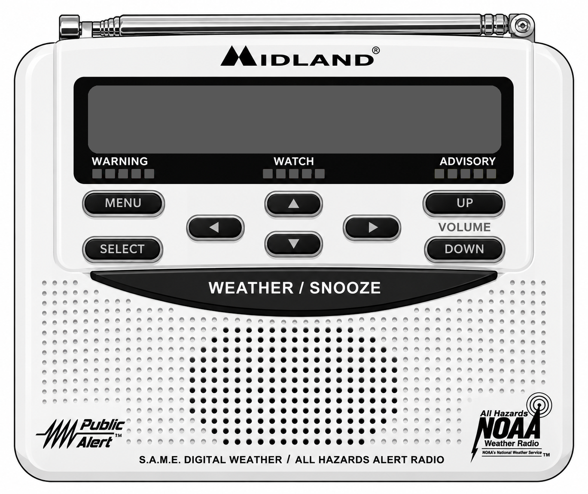
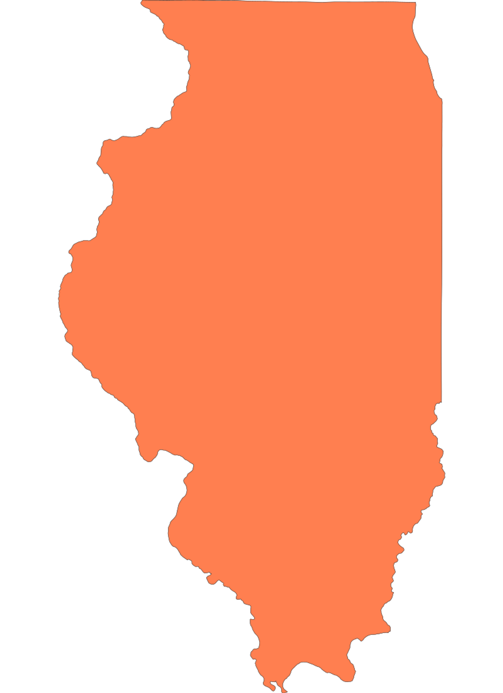

NOAASTANDBY
--:-- --
Virtual WR-120 controls: MENU, SELECT, arrows, WEATHER/SNOOZE and VOLUME are interactive. Settings are remembered by this browser.
☷ Station Information
- Callsign
- WXM49
- Frequency
- 162.425 MHz
- Location
- Marion, Illinois
- NWS Office
- Paducah, Kentucky (PAH)
- Transmitter Power
- 1,000 Watts
- Audio Format
- 64 kbps • MP3 • Mono
- Coverage
- Approximately 40–70 miles
- Counties (IL)
- Alexander, Franklin, Hardin, Jackson, Johnson, Massac, Perry, Pope, Pulaski, Saline, Union, Williamson
- Counties (KY)
- Ballard
- Feed Type
- Live receiver feed
- Server
- Icecast
🔊 Listen Live
CHECKING
— listeners🔈🔊
You are listening to a live NOAA Weather Radio broadcast.
This is a real-time receiver feed of WXM49 from Marion, Illinois.
Coverage Area
Primary (0–40 miles)Secondary (40–70 miles)
IAMOINKY

ILLINOISWXM49Marion
N
⌃
⌃
02550100 Miles
Approximate
reception area.
Actual coverage
may vary.
reception area.
Actual coverage
may vary.
ⓘ About NOAA Weather Radio
NOAA Weather Radio (NWR) is a nationwide network of radio stations broadcasting weather forecasts, warnings, and other hazard information from the National Weather Service 24 hours a day, 7 days a week.
Learn more at weather.gov/nwr ↗NWRALL HAZARDS162 MHz WEATHER RADIO